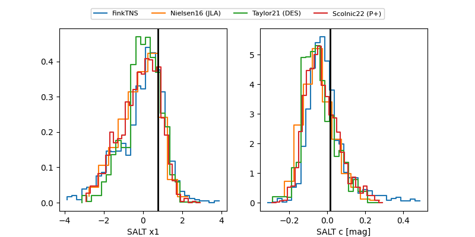

FINK: ZTF25abpcmpy
Lasair: ZTF25abpcmpy
ALeRCE: ZTF25abpcmpy
TNS: 2025wub
YSE: 2025wub
ZTF25abpcmpy (ztf,fink)
2025wub (tns,yse)
ATLAS25lez (atlas)
equatorial (ra, dec) = (8.1411,+12.70179)
galactic (l, b) = (115.7743,-49.90748)

last atlasc=18.68, atlaso=18.91, ztfg=18.87
4 atlasc, 4 atlaso, 6 ztfg detections